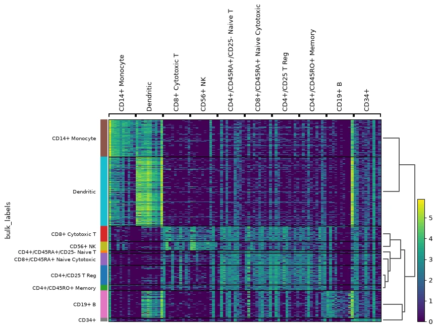
01 / TRANSCRIPTOMICSGenomics & Transcriptomics
RNA-seq workflows, differential expression, sequence processing, enrichment analysis, and biological data interpretation.
Computational research support for laboratories, biotechnology teams, and biomedical projects. From biological data analysis to molecular modeling.

Bioinformatics · Computational Biology
Independent Research Consulting
I am a bioinformatics researcher with an MS in Bioinformatics from NUST SINES. My work spans biological data analysis, machine learning, and computational drug discovery.
My MS research, NeuroBridge, explored the integration of histopathology and gene-expression data for CNS tumor analysis. This academic background informs my computational consulting work.
Explore academic researchDefine the biological objective, expected outputs, and available data before selecting methods.
Prioritize traceable preprocessing, documented analysis, and organized computational workflows.
Use appropriate comparisons and limitations rather than presenting every computational result as a validated finding.
Provide clear figures, method summaries, scripts, and explanations suited to the research team.
Focused technical support for studies that need specialized analysis, modeling, or reproducible research code.

01 / TRANSCRIPTOMICSRNA-seq workflows, differential expression, sequence processing, enrichment analysis, and biological data interpretation.
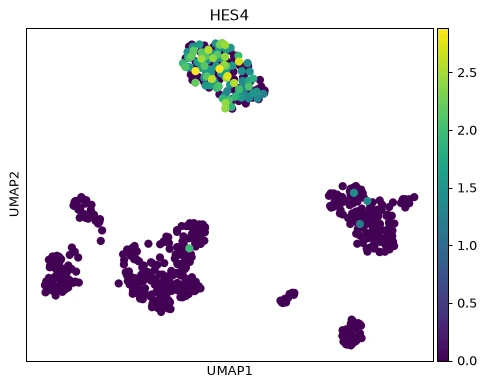
02 / SINGLE-CELL ANALYSISSingle-cell quality control, normalization, embedding, clustering, marker assessment and interpretation of cell populations.
 03 / MACHINE LEARNING
03 / MACHINE LEARNING
Machine-learning models, image-feature analysis, multimodal data integration, model evaluation, and interpretation.
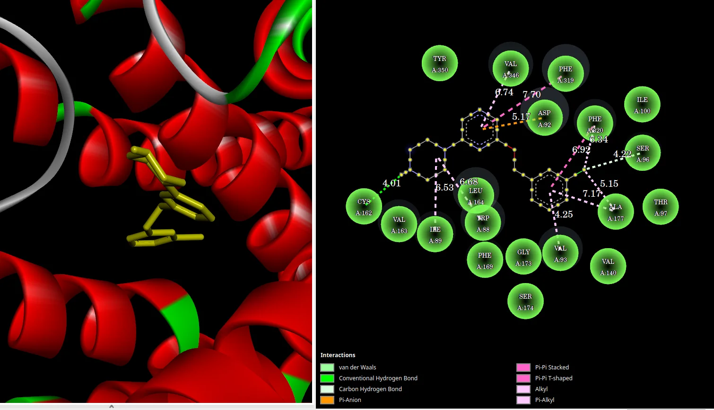
04 / MOLECULAR MODELINGMolecular docking, QSAR, pharmacophore analysis, structure-based interpretation, and molecular dynamics.
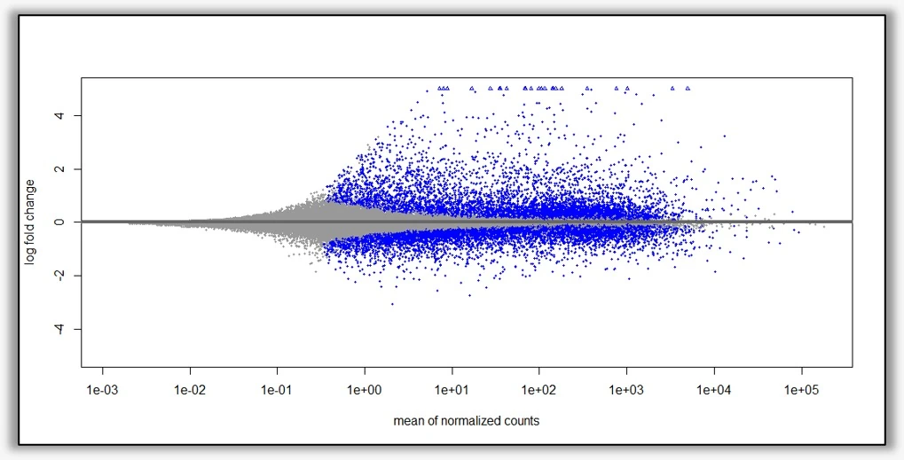
05 / MICROBIOMETaxonomic profiling, differential-abundance review, gene-family and pathway interpretation, and biological context for microbial community datasets.
Python and R analysis pipelines, statistical visualization, workflow documentation, and research software support.
Selected computational workflows, described from question to approach to deliverable. These examples are not presented as clinical products or peer-reviewed publications.
Question: Integrating tissue morphology and gene-expression representations for GBM-like versus LGG-like analysis.
Approach: Real WSI patches; ResNet-50 and CTransPath features; RNA embeddings; patient-level evaluation; missing-modality experiments.
Outputs: Classifiers, retrieval examples and methodological comparisons. Research prototype, not a diagnostic system.
Multimodal AI · Computational pathologyRead research overview ↗Question: Connecting differential gene expression with interpretable disease-associated biological pathways.
Approach: RNA-seq processing and QC; DESeq2-based comparisons; enrichment and Hallmark gene-set interpretation.
Outputs: Differential-expression tables, pathway summaries and reproducible figures.
RNA-seq · DESeq2 · GSEAExplore computational projects ↗Question: Studying structure–activity relationships from molecular descriptors and predictive modeling.
Approach: Molecular feature preparation with RDKit; train/test evaluation; model comparison and SHAP interpretation.
Outputs: Prediction assessments, descriptor importance and model documentation; study-level claims only.
RDKit · scikit-learn · SHAPExplore computational projects ↗Question: Investigating ligand–protein interactions and structural stability using complementary calculations.
Approach: Structure preparation; docking and interaction review; simulation quality checks; RMSD, RMSF and related trajectory measures.
Outputs: Interaction visualizations, comparative plots and documented simulation methods; not experimental binding evidence.
Docking · GROMACS · Structural bioinformaticsExplore structural projects ↗Question: Linking changes in microbial taxa with gene families and enriched or depleted pathways.
Approach: Taxonomic abundance; functional profiles; differential statistical comparisons; pathway coverage and contextual interpretation.
Outputs: Organized pathway and gene-family tables, explanatory plots and reproducible analysis notes.
Metagenomics · Statistics · Functional profilingExplore computational projects ↗Two short examples of molecular visualization based on your supplied clips, optimized for a dark-background portfolio without white video frames.
Animated three-dimensional representation of a protein structure, showing the molecular geometry over the uploaded visualization frames.
The white canvas was removed for web presentation. These visualizations depict computational structures, not experimental measurements. Use the playback controls to pause or replay.
A selection of real computational plots and methodology figures. Tap or click a figure to see the original presentation at a larger size.
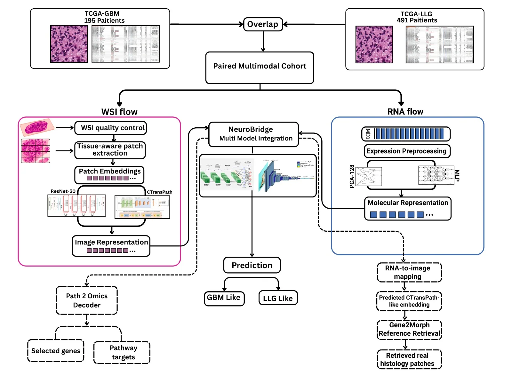
The study design integrates histopathology and gene-expression representations for GBM-like and LGG-like comparisons.

Protein–ligand pose and interaction diagrams from a computational drug-design example.
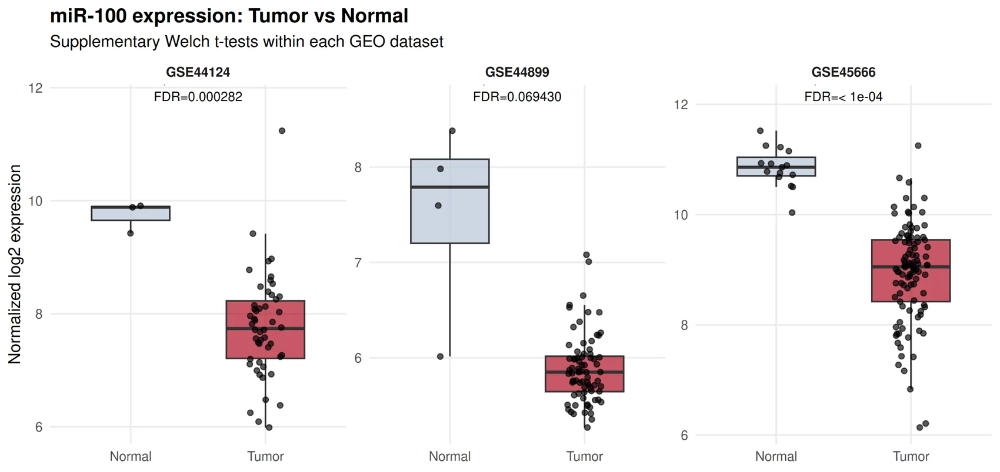
Tumor-versus-normal miR-100 measurements across three GEO datasets, as plotted in the supplied figure.
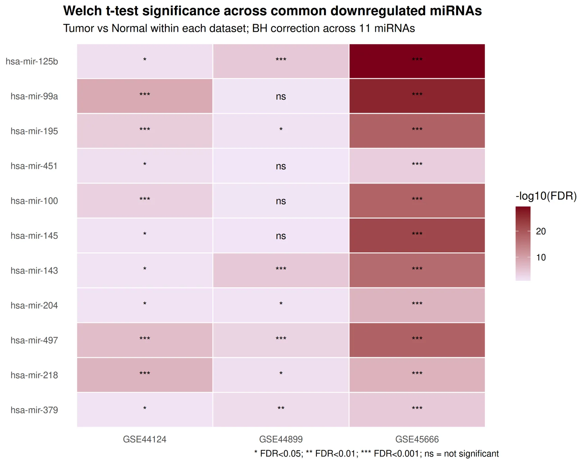
Adjusted-significance summary of selected downregulated miRNAs across multiple GEO datasets.
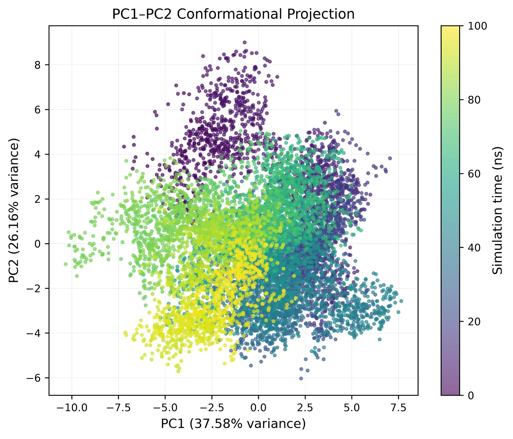
Principal-component projection of a molecular-dynamics trajectory. Color indicates simulation time.
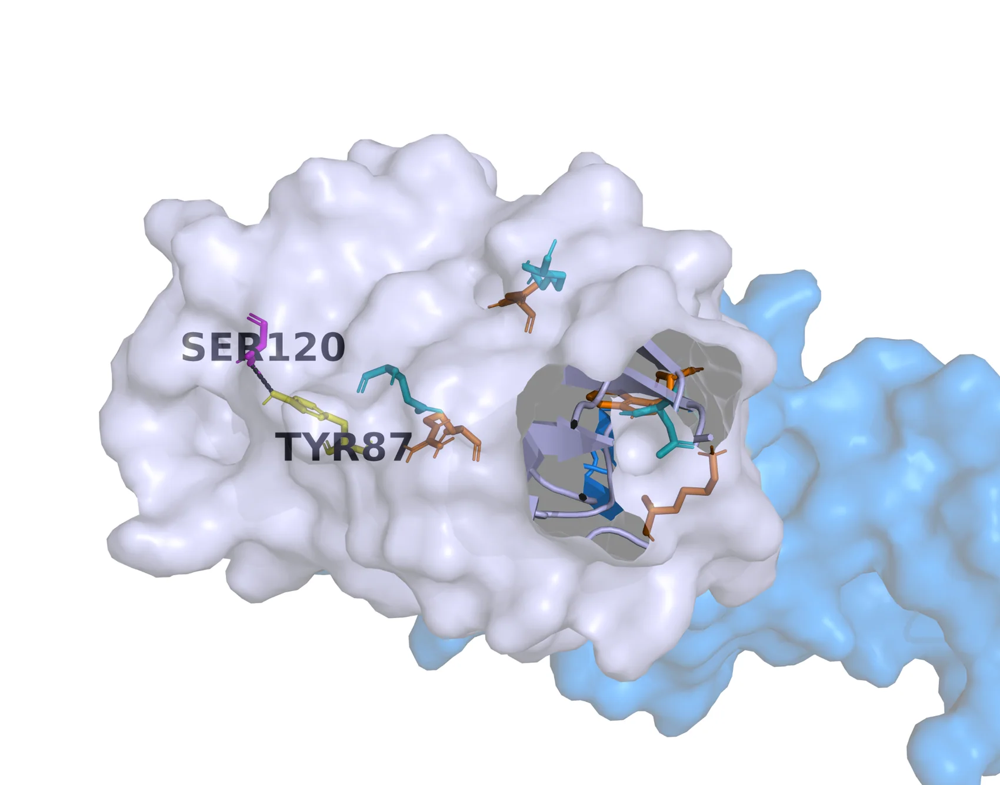
CD28–CD80 interface visualization from structural modeling work.
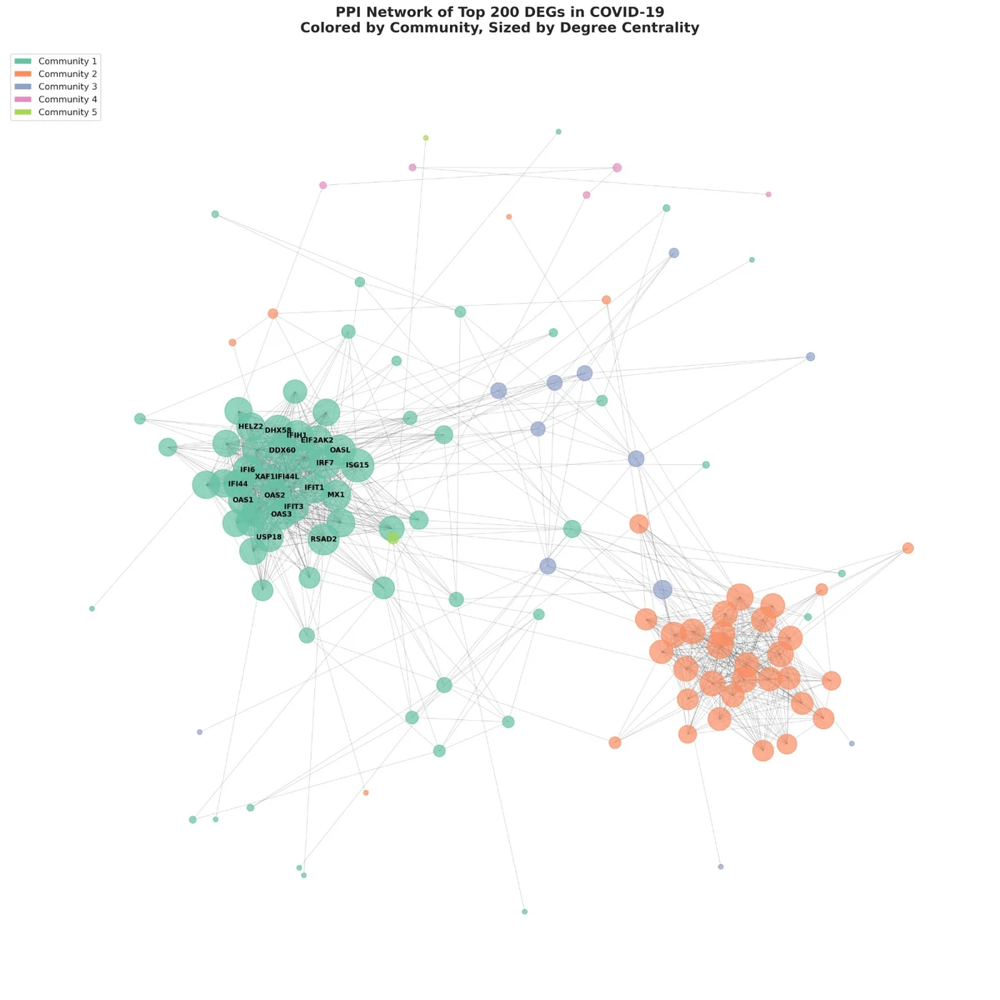
PPI network of selected differentially expressed genes from a computational network analysis.
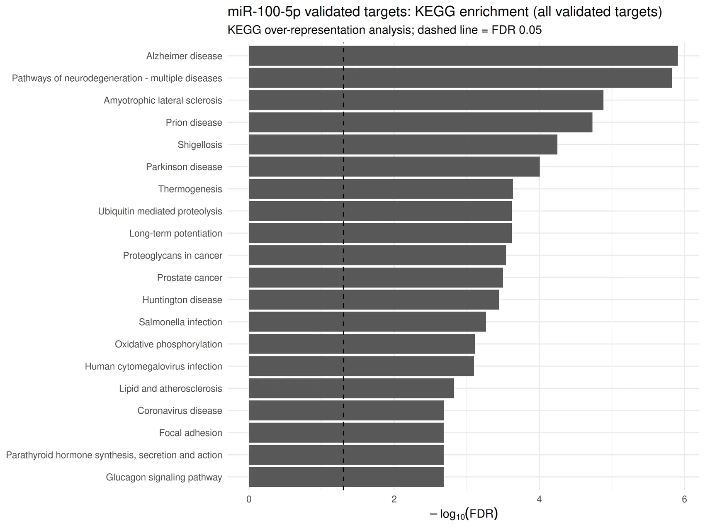
Enrichment results for validated miR-100-5p targets; the displayed values are from the supplied plot.
A clear, documented computational workflow tailored to each research question and dataset.
Review the data, objectives, analysis requirements, expected outputs, and technical constraints before work begins.